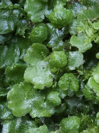

Wiesnerellaceae
Wiesnerella Liverwort
Wiesnerellaceae is a monotypic family (containing only Wiesnerella denudata) in the order Marchantiales. This large, complex thalloid liverwort is distinguished by its unique female reproductive structures (archegoniophores), which have stalks that typically branch near the apex, each branch terminating in a star-shaped head. It favors very moist, shaded habitats, often near running water.
Overview
The Wiesnerellaceae family contains a single genus and species, Wiesnerella denudata. It is a relatively large thalloid liverwort, comparable in size to Conocephalum, forming extensive green mats. The thallus is complex, containing air chambers accessed via simple pores. While superficially resembling other large Marchantiales, Wiesnerella is immediately identifiable when fertile by its highly distinctive archegoniophores.
Wiesnerella denudata has a somewhat scattered distribution, primarily found in East and Southeast Asia, the Himalayas, and with disjunct populations reported in locations like Hawaii and possibly Australasia. It thrives in consistently humid, deeply shaded environments, typically on wet rocks, soil banks, or logs adjacent to streams, waterfalls, or seeps.
Plants are dioicous. Male plants produce antheridia in raised dorsal pads, while female plants produce the unique archegoniophores where the main stalk usually branches dichotomously below the apex, resulting in two (or sometimes more) star-shaped heads borne together on the branched structure. Asexual reproduction via gemmae is absent.
Quick Facts
- Scientific Name: Wiesnerellaceae
- Common Name: Wiesnerella Liverwort
- Number of Genera: 1 (Wiesnerella)
- Number of Species: 1 (W. denudata)
- Distribution: East/Southeast Asia, Himalayas primarily; also scattered locations (e.g., Hawaii). Requires very moist, shaded habitats near water.
- Evolutionary Group: Bryophytes - Liverworts (Marchantiophyta) - Class Marchantiopsida - Order Marchantiales
Key Characteristics
Growth Form and Habit
Plants form large, prostrate, dichotomously branching thalloid gametophytes, often several centimeters wide and forming extensive mats. The thallus is relatively robust and typically medium to dark green.
Thallus Structure
The thallus exhibits complex internal differentiation with a dorsal layer containing air chambers filled with photosynthetic filaments. These chambers open to the surface via simple air pores, which are slightly elevated and may appear somewhat star-shaped due to the arrangement of surrounding cells. The ventral surface bears rhizoids and typically two rows of purplish or hyaline ventral scales. The thallus may possess a faint aromatic scent when crushed, but it is usually much less pronounced than in Conocephalum.
Reproductive Structures
Plants are strictly dioicous. Antheridia (male organs) are embedded within distinct, raised, sessile, often horseshoe-shaped or irregular dorsal pads (antheridial receptacles). The archegoniophore (female receptacle) is highly characteristic: it arises from the thallus apex on a long stalk that typically branches dichotomously near the top. Each branch terminates in a star-shaped head (capitulum) with 4-6(-8) rays. Archegonia and sporophytes develop on the underside of these rays, protected by involucres. Asexual reproduction via specialized gemmae is absent.
Sporophyte and Spores
Sporophytes develop on the underside of the archegoniophore rays. Each consists of a foot, a short seta, and a dark, ovoid capsule. The capsule wall dehisces by splitting into 4-6 irregular valves. Functional elaters with spiral thickenings are present among the spores, aiding dispersal. Spores are released singly.
Chemical Characteristics
The specific phytochemistry is less studied than in some other Marchantiales, but likely includes various terpenoids and phenolic compounds common to the order. The faint scent suggests the presence of some volatile organic compounds.
Field Identification
Wiesnerella denudata can be identified by its size, habitat, and especially its unique reproductive structures:
Primary Identification Features
- Branched archegoniophore: The stalk of the female receptacle typically forks, bearing multiple (usually two) star-shaped heads. This is the most diagnostic feature.
- Large thallus size: Similar in scale to Conocephalum or Marchantia.
- Simple air pores: Pores lack the barrel shape of Marchantia.
- Raised, often horseshoe-shaped antheridial pads: Distinctive male receptacles on separate plants.
- Absence of gemma cups.
Secondary Identification Features
- Habitat: Restricted to very moist, deeply shaded environments, usually near streams, waterfalls, or seeps.
- Dioicous: Male and female plants are separate.
- Ventral scales present.
Seasonal Identification Tips
- Gametophyte: Perennial and visible year-round in its constantly moist habitats.
- Reproductive Structures: Archegoniophores and antheridial pads are seasonal, typically developing in spring or summer depending on the climate. The branched archegoniophore is unmistakable when present.
Common Confusion Points
- Conocephalum conicum: Distinguished by its unbranched archegoniophore stalk with a single cone-shaped head, strong scent, and distinct hexagonal surface pattern.
- Marchantia species: Distinguished by their unbranched archegoniophore stalks with differently shaped heads (e.g., umbrella-like), barrel-shaped pores, and often the presence of gemma cups.
- Aytoniaceae (e.g., Asterella, Reboulia): Have unbranched archegoniophore stalks and differently shaped heads (though sometimes star-shaped in Asterella, the stalk is unbranched).
- Other large thalloid liverworts: Lack the combination of simple pores and the unique branched archegoniophore.
Field Guide Quick Reference
Look For:
- Large thallus in very wet shade
- Branched female stalk
- Multiple star-shaped heads per stalk
- Simple pores
- Horseshoe-shaped male pads (sessile)
- No gemma cups
Key Distinctions:
- Branched archegoniophore is unique among common Marchantiales.
- Distinguished from Conocephalum by receptacle shape and lack of strong scent/hexagonal pattern.
- Distinguished from Marchantia by simple pores, receptacle shape, lack of gemma cups.
Notable Examples
The family Wiesnerellaceae contains only one species:

Wiesnerella denudata
Wiesnerella Liverwort
The sole representative of its family. This large thalloid liverwort inhabits very moist, shaded locations, often near water. It is dioicous and most easily identified by its unique archegoniophore, where the stalk typically branches dichotomously, each branch bearing a star-shaped head. Antheridial receptacles are raised, sessile pads, often horseshoe-shaped.
Phylogeny and Classification
Wiesnerellaceae represents a distinct lineage within the order Marchantiales (class Marchantiopsida). Its placement within the order is well-supported by molecular data, showing relationships to other complex thalloid families like Aytoniaceae, Conocephalaceae, and Marchantiaceae.
Morphologically, it is distinguished primarily by the unique branched structure of its archegoniophore, a feature not found in other families of the order. This suggests a distinct evolutionary trajectory regarding the development of reproductive structures. Its specialized habitat preference for hyper-humid conditions also sets it apart ecologically from many other Marchantiales.
Position in Plant Phylogeny
- Kingdom: Plantae
- Clade: Embryophytes (Land plants)
- Division: Marchantiophyta (Liverworts)
- Class: Marchantiopsida
- Order: Marchantiales
- Family: Wiesnerellaceae
Evolutionary Significance
Wiesnerellaceae is evolutionarily significant due to:
- Unique Reproductive Morphology: The branched archegoniophore represents a distinct evolutionary modification within the Marchantiales.
- Phylogenetic Position: Helps resolve relationships among the complex thalloid liverwort families.
- Ecological Specialization: Represents adaptation to specific hyper-humid, shaded habitats.
- Biogeography: Its somewhat disjunct distribution pattern raises interesting questions about historical dispersal or vicariance.